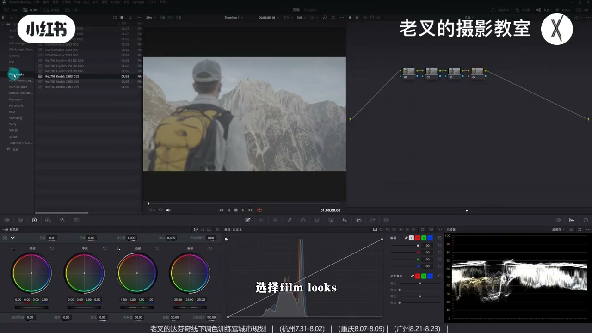
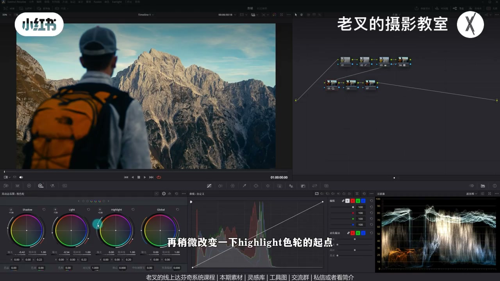
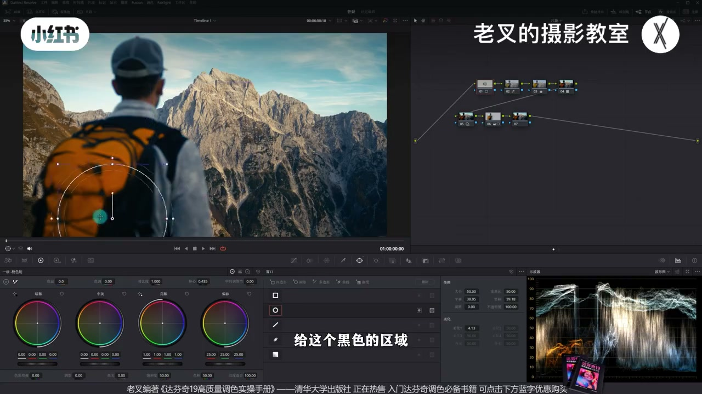
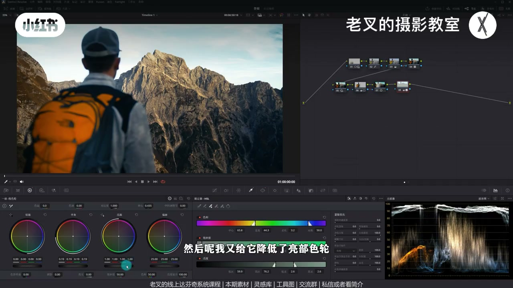
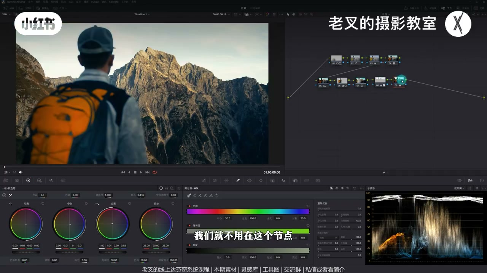
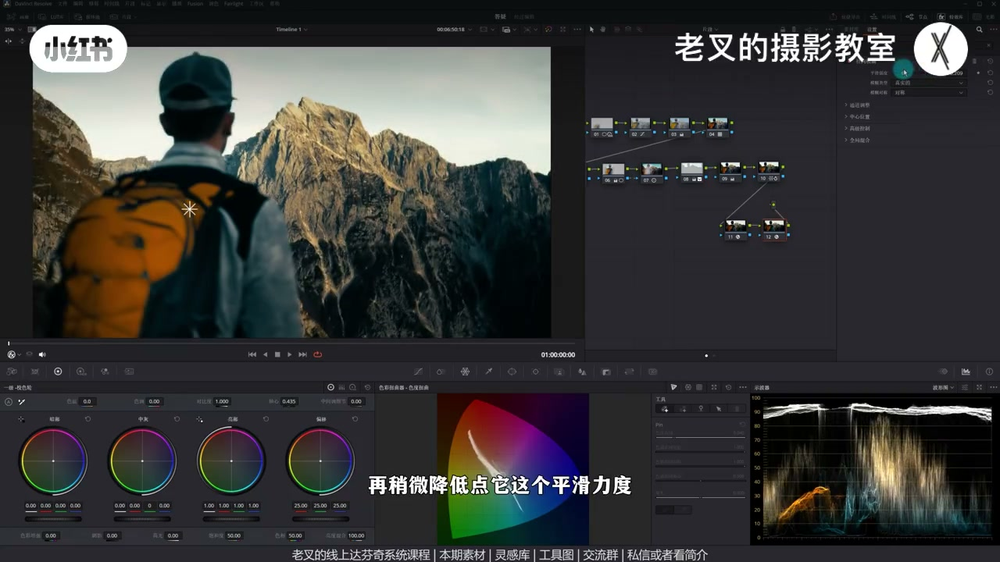

内容要点
仿《白日梦想家》：Film Look 2383 铺底 → 还原曝光饱和 → HDR 大力压中灰并舒展高光 → 局部修人物/山体/天空（天空提亮但发闷）→ 一级轮黄绿暖+青绿冷，密度与向量让蓝「变实」→ 电影感外观创建器与径向模糊去数码感。追求大体接近，不追求像素级一致。
知识结构
LUT 库 Film Look·2383；灰片先校正曝光与饱和。
Shadow/Light 下压中灰，Highlight 起点+曝光舒展高光。
人物/背包提亮应回到最前修正；外部节点给山加对比。
限定器选天：抬中灰再降亮度轮，亮而不刺。
一级轮黄绿暖+暗部蓝；青蓝加密度、向量靠青去「浮蓝」。
电影感外观降混合；径向模糊中心跟人，去数码感。
电影仿色顺序：胶片 LUT 铺底 → HDR 对齐中灰/高光关系 → 局部曝光匹配叙事重点 → 冷暖与密度收色 → 柔化去数码感。思路可复用，质感受相机与胶片限制。
00:00-00:45立题：明暗冷暖 + 2383 铺底与还原
朋友问白日梦想家怎么仿。参考有明显基于明暗的冷暖反差（高光暖、暗部冷），颜色很大可能用 2383 铺底。调色面板左上角 LUT 库→Film Look→自带 2383 拉到节点。灰片先回前面节点校正：高光上提、暗部下压，再略加饱和，得到基础风格。

00:45-01:22HDR：大力压中灰、舒展高光
波形上参考把中灰大力往暗压，高光很舒展。第二排用 HDR：Shadow 与 Light 下降压中灰；改 Highlight 起点并提高曝光舒展高光。影调接近后，颜色仍差一截，先继续优化局部曝光。

01:22-02:22局部：人物提亮回源头修；山体外节点加对比
人物偏黑可画遮罩抬中灰，但重点常在背包——提亮易发灰，因原素材人物区就偏暗，应回到最前节点对暗区遮罩抬 Shadow，从源头修正。山体仍灰：在人物遮罩后 Alt/Option+O 建外部节点，对其余加对比度并配合轴心略压暗，贴近参考偏暗的整体。

02:22-03:02天空：亮但发闷，避免刺眼死白
参考天空过曝（天气因素）。限定器选天空后：先抬中灰，再降亮度色轮，做出「亮但发闷」；只猛提会刺眼。至此除颜色外已较接近参考；素材可知识平台领取。

03:02-04:01颜色：黄绿暖 + 青绿冷；密度让蓝变实
高光暖偏黄绿、暗部冷偏青绿：一级轮亮部左上，中灰右下回调，暗部加蓝。暗部蓝若「浮在表面」不实，不必在该节点死磨——新节点略加青蓝密度，蓝会变实；可略降青饱和，向量把蓝往青靠。亮度不如参考则不会同样艳，属正常。

04:01-05:19胶片感：外观创建器 + 径向模糊去数码感
电影用胶片机拍，可套达芬奇电影感外观创建器，主要降全局混合让效果淡一点。参考清晰度较低、数码感弱：径向模糊中心移到人物，降平滑力度，遮罩控制影响范围（人物圈可更小并反转），让四周微糊去数码感。与还原比风格极强；与参考大体接近但难完全一样——相机不同质感出不来，染色思路可参考。

完整转录（217段）
以下文本由 Whisper medium 模型自动转录，可能存在少量识别误差，已尽可能修正。
白日梦想家怎么仿色
这是前几天一位朋友问我的
我们用这个素材试试看
其实初看参考图有着
非常明显基于明暗的冷暖反差
它的高光偏暖暗部偏冷
而这种颜色有很大可能
是用2383来铺底的
那么我们就可以新建几个节点
然后把达芬奇自带的2383
给它拉到4号节点中
这个是在达芬奇调色面板
左上角拉的库中
选择Film Look
里面就有自带的2383
把它拉到第四个节点
因为它是灰衣片
所以我们需要再回到2号节点
给它校正一下曝光
把它的高光给它往上提
暗部给它往下降
好大概到这里
然后再给它加一点饱和度
大概是这样的效果
此时我们画面就有一个基础的风格了
然后再看参考图
从波线图上能够看到
参考图它是非常大力的
将中灰区域的内容往暗部去压的
而高光它则是非常的舒展
这个效果我们用HDR色轮
就非常好实现
我们可以建立几个节点
拉到第二排
在第二排的第一个节点中
我们用HDR色轮
将Shadow色轮和Light色轮
都给它往下降
这样可以让中灰区域的内容
给它往下压
然后再稍微改变一下
Highlight色轮的起点
再提高点Highlight色轮的曝光
我们此时看波线图的变化
是不是中灰部分
有大量的信息往下压
同时高光部分也舒展开了
此时整体的影调关系
其实跟参考图是比较接近了
当然颜色还是有很大差别的
接下来我们就可以稍微优化一下
局部的曝光
首先是人物
我觉得我们的人物太黑了
所以我给它画一个遮罩
然后通过中灰色轮
给它稍微提高一点曝光
其实我在提亮它的时候
重点不在人物身上
更多的是想把它这个背包给提亮
但是你发现
这个背包你怎么提
它都不是很舒服
很容易发灰
会有这种情况
是因为原素材中
人物的曝光就相对暗得多
所以我们应该在最前面这个节点
把原素材的情况给它修正了
我们来到一号节点
给这个黑色的区域
大概是这个位置
画一个遮罩
然后再提高点
shadow色轮的曝光
以这样的方式提亮的
能够让这一部分相对舒服一些
然后我们再回到六号节点
我觉得此时画面中
这个山还是有一点灰的
所以我们选择六号节点
再按住Alt或者是Option加O
建立一个外部节点
选中其余部分
稍微增加一点对比度
让它能够立体一点
也可以配合一下轴心
让它能够暗一点
其实我们参考图它也是比较暗的
好 大概到这个效果
我们再看参考图
参考图它的天空其实是过曝的
它可能是天气的问题
我们如果想要去参考它的话也可以
我们在八号节点
用限定器选出天空
好 选出来之后
我们就可以把它提亮
其实我这里提亮的方式
会有一点点区别
我先是给它提高了中灰
然后我又给它降低了亮度色轮
我其实是想要让它
也呈现出参考图这种亮的
但是发闷的结果
如果你只是单纯的
把它提的特别亮的话
它会有点刺眼 对吧
大概到这个程度
我觉得就可以了
亮度其实比较接近了
这时候我们就把曝光调好了
除了颜色以外
跟参考图还是比较接近的
素材我也转到了
线上分享平台
可以私信互相看我剪辑
来加入后免费自取
还有答复体的线上系统课程
和线下调色训练营
接下来我们就可以动颜色
颜色其实相对比较简单
我们已经明确了
它高光偏暖暗部偏冷的这种风格
对吧
而它这种高光暖是黄绿的暖
暗部是青绿的冷
所以我们可以再建一个节点
利用一级校色轮
把亮部色轮往左
上角移动
再把中灰色轮往右下角
去给它做一定的回调
再用暗部色轮
给暗部加一点蓝色
好 大概是这个结果
我们可以跟参考图再做下对比
其实颜色该有的都有了
但是有一点小区别
我们看到在它的暗部
它是这种青绿色的蓝
而我们的蓝也有
可是我们这个蓝不是很舒服
就感觉有点像浮在表面
对吧
没有它那么实
这个其实我们就不用在这个节点
再继续磨了
太麻烦
我们可以再加一个节点
稍微增加一点青色
和蓝色的密度
你看这个蓝色是不是就变实了
它就不会像浮在表面那种感觉了
对吧
也可以稍微降低点
青色的饱和度
再利用蜘蛛网
把蓝色往青色方向稍微移动一点
这样我们就可以把我们这个蓝色
调得跟它比较接近了
我们没它那么亮
所以不会有它这么艳
颜色调制就差不多了
我们与参考图去做下对比
颜色还是比较接近的
对吧
但是这个电影
它是用胶片摄影机拍的
所以我们也可以上一个
电影感外观冲动器
给它带上一点胶片的感觉
这个电影感外观冲动器
也是打不进自带的
套上去之后参数我都没怎么动
我只是单纯的给它降低了
全局混合的力度
让它这个效果稍微淡一点
它原始这个结果
我觉得还是挺好的
再一个就是我们看到参考图
它也是因为胶片是已经拍的
所以它的一个清晰度其实没有那么高
而我们的画面数码感还是很强的
所以我又建个节点
给画面加一个镜像模糊
把它这个中心点移动到人物身上
再稍微降低点它这个平滑力度
我们也可以再画一个遮罩
稍微控制一下
我们想要它影响的一个范围
我觉得人物这一圈
可以影响的稍微再小一点
把它反转了
那此时我们看到这个四周
是不是就能够出现了一种模糊的感觉
这个可能也能给我们画面
去掉一点数码感
那到这里其实我们就调好了
我们先不与参考图做对比
我们与还原后的画面做对比
它其实是一个非常强的风格
对不对
我们如果与参考图去做对比的话
你能感觉到其实大体还是比较接近的
但你说完全一样还是不太可能
毕竟相机不同
很多质感还是出不来的
但是这样的染色思路
大家可以参考一下
实在也可以临续过去之后调一调
那到这里
如果你觉得对你有帮助的话
还希望多多赞联
好了
这期就到这里
886